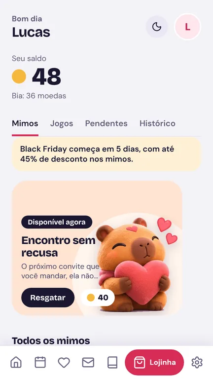
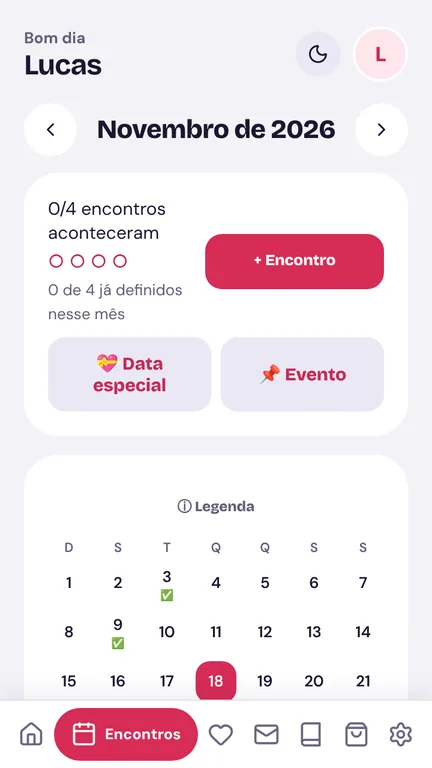
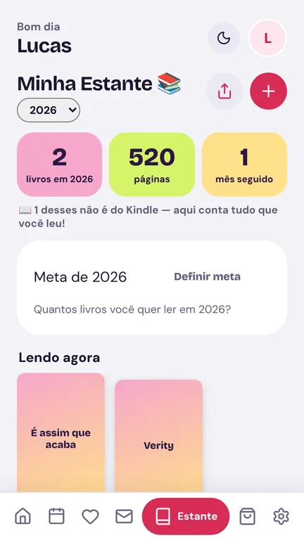

Humor do dia
Registre como você está e como se sente na relação. Seu par vê, e vocês entendem o dia um do outro sem precisar adivinhar.
O Saudômetro transforma conversas difíceis em pequenos rituais diários: humor, saudade, recados e encontros. Mais perto, mesmo quando a rotina aperta.
A gente manda mil mensagens por dia e quase nenhuma diz como a gente está.
Falta de tempo? Falta de jeito. A maior parte dos atritos nos relacionamentos não vem de falta de carinho, vem de coisa que ficou sem dizer. O Saudômetro dá o jeito: pequeno, leve e de verdade.
Escolha seu humor do dia e diga se quer conversar: modo avião, pouquinho ou falante.
Seu par vê como você está e a saudade que bateu. Sem cobrança, só presença.
Marquem encontros, troquem recados e usem as moedas em mimos que vocês mesmos combinam.
Cada parte do app foi pensada para tornar falar de sentimento mais fácil e mais leve.
Registre como você está e como se sente na relação. Seu par vê, e vocês entendem o dia um do outro sem precisar adivinhar.
De 0 a 10, quanta saudade bateu hoje? Os dois marcam e acompanham juntos, de longe ou de perto.
Mande recadinhos e responda à pergunta do dia. A resposta do outro só aparece depois que você responde a sua.
Combinem os encontros do mês, guardem datas especiais e deixem a saudade virar plano. O ciclo menstrual é opcional e privado.
Moedas ganhas no dia a dia viram mimos combinados: um cinema, um chocolate, uma maratona sem culpa.
Cartas, stop, estrelas e mais. Jogos leves para rir juntos, mesmo à distância.
Registre o que cada um está lendo e acompanhe o progresso do outro.
A mesma ideia para a turma: humor, rolês, prêmios e desafios em grupo.
Telas reais do Saudômetro, em modo claro e escuro.
Tela Hoje
Recados

Mimos

Encontros

Estante
A Capi é a capivara que dá voz às emoções do Saudômetro. Ela fica apaixonada, brava, com sono, com saudade e, de vez em quando, bota óculos escuros. Está nos mimos, nos jogos e nas datas especiais.
Criada para o Saudômetro, a Capi é uma personagem original.
O que vocês registram fica visível só para o casal ou a turma, com acesso separado no banco de dados.
Dá para exportar e apagar sua conta e seus dados pelo próprio app, quando quiser.
Não vendemos seus dados e não mostramos propaganda. O app é para vocês, não para anunciantes.
Planos com recursos extras chegam em breve. Quem já usa o app continua com o que tem hoje.
Começar agoraNão. O Saudômetro é grátis para começar. Planos com recursos extras vão chegar depois, e quem já usa o app não perde o que já tinha.
Sim. É um app que roda no navegador e pode ser instalado na tela inicial. No iPhone, a instalação é pelo Safari; no Android, pelo Chrome. A versão para a Google Play está a caminho. A página Como instalar mostra o passo a passo.
Cada casal ou turma só enxerga o que é seu: o acesso é separado por regras no banco de dados. Você entra com a conta Google e pode apagar sua conta e seus dados pelo próprio app. Detalhes na Política de Privacidade.
O Saudômetro foi pensado para duas pessoas, então a graça aparece quando os dois usam. Também existe o Modo Amigos, para a turma.
Pelo app, em Perfil, ou seguindo as instruções da página Excluir minha conta.
Gabriel Nascimento Santos. O app, a marca e a mascote Capi são criações originais. Os créditos estão em Créditos e direitos autorais.
Leva um minuto. Escolha seu humor e mande um sinal de saudade para quem faz falta.